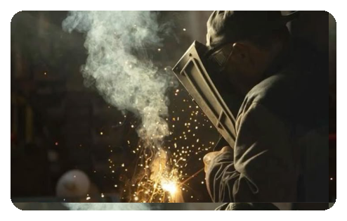
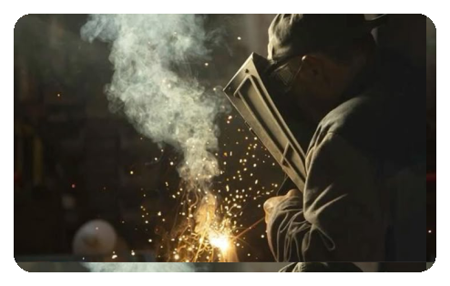

Monitoramento em metalúrgicas
Fornecemos sensores precisos para monitorar os níveis de gases poluentes durante a soldagem metalúrgica, garantindo segurança e conformidade ambiental.
Fornecemos sensores precisos para monitorar os níveis de gases poluentes durante a soldagem metalúrgica, garantindo segurança e conformidade ambiental.
Na indústria metalúrgica, processos de soldagem liberam gases tóxicos como monóxido de carbono, dióxido de nitrogênio e fumos metálicos, que representam riscos à saúde dos trabalhadores. Nossa solução combina sensores de alta precisão e tecnologia Arduino integrada a dashboards interativos para monitoramento em tempo real, gerando alertas automáticos e garantindo um ambiente seguro. Com tecnologia confiável, suporte especializado e conformidade com normas de segurança, ajudamos sua empresa a prevenir intoxicações e otimizar processos.
 

 1.svg) Monitoramento de gases tóxicos em metalúrgicas
Monitoramento de gases tóxicos em metalúrgicas
Nosso sistema detecta gases como monóxido de carbono e dióxido de nitrogênio em tempo real, garantindo a segurança dos colaboradores durante o processo de soldagem.
 1.svg)
Solução envia notificações rápidas sempre que os níveis de gases atingem valores críticos, permitindo que ações corretivas sejam tomadas imediatamente.
 1.svg)
Nossa tecnologia ajuda a cumprir as normas de segurança e evita danos aos equipamentos, reduzindo custos com manutenção e prevenindo multas.


Os gases gerados durante a soldagem, como monóxido de carbono, dióxido de nitrogênio e ozônio, podem se acumular no ambiente e atingir concentrações perigosas. Isso não só prejudica a saúde dos colaboradores, mas também pode corroer equipamentos, estruturas metálicas e componentes sensíveis, aumentando significativamente os custos de manutenção e reparo. Além disso, a falta de controle pode resultar em multas por não conformidade com as normas de segurança, afetando a reputação da empresa e, consequentemente, a segurança dos funcionários e a eficiência operacional.

Em ambientes industriais como as metalúrgicas, onde processos de soldagem e outras atividades envolvem altas temperaturas e reações químicas, a segurança dos colaboradores deve ser uma prioridade. Esses processos podem gerar gases tóxicos que representam grandes riscos à saúde dos trabalhadores, podendo causar problemas respiratórios, neurológicos e cardiovasculares. A exposição prolongada a esses gases pode resultar em doenças crônicas graves, comprometendo a saúde e o bem-estar dos funcionários.